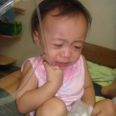

A family-driven effort committed to bringing direct, transparent help and essential volunteer education to neighborhoods across our region.
We believe that direct relief shouldn't be complicated. Our platform was built from a simple family conversation about how to bridge the gap between people who want to give and communities facing temporary hardships. By showing exactly why resources are needed and where they are going, we ensure that every act of generosity creates a visible, lasting impact.
The real people behind the platform coordination, logistics, and drives.

Manages code platform development, local coordination loops, and structural website strategy.
Directs local family networking loops, resource drops, and safety check-ins with neighbors in need.
Oversees inventory tracking maps, sorting of material donation items, and verification processes.